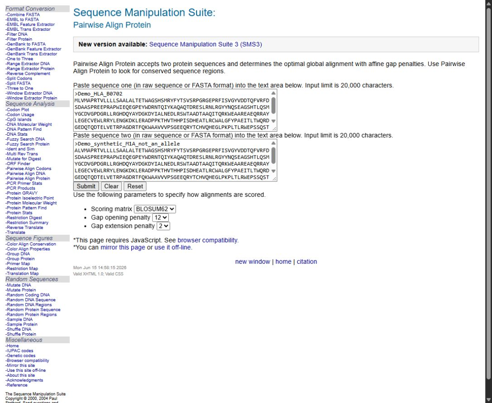
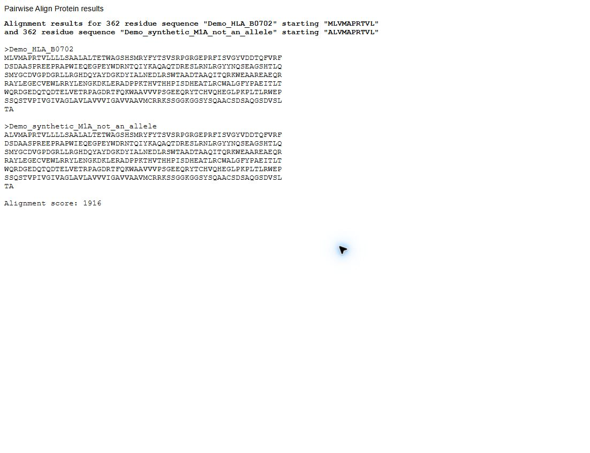

First-choice route for Step 2.7
Align two proteins online: Sequence Manipulation Suite
Use this independent public website as the first choice for the workshop protein alignment. UniProt Align remains available as option 2 in task 2.7. No installation or account is needed. Bookmark it for later use. The calculation runs in your browser without an EBI job queue.
Open Pairwise Align Protein ↗ Return to task 2.7
1. Prepare your two proteins
- Keep these instructions open and open the tool above in a separate tab or window.
- Have reference_protein.fasta and synthetic_protein.fasta ready. Use proteins from the same locus and comparable sequence boundaries, not genomic DNA or CDS.
- Each FASTA entry has a unique header beginning with >, then amino-acid letters. Record each original protein length, excluding the header and whitespace.
- Check for X, *, B, Z, J, U, O, digits or existing gaps. Compare lengths before and after preparation and keep the original files. SMS2 can silently remove unsupported characters. For this route use unaligned sequences containing only ACDEFGHIKLMNPQRSTVWY. If other symbols occur, open the help below before proceeding.
My protein contains X or a stop symbol
Keep the original file unchanged. X means an unknown amino acid, not necessarily a stop codon. Confirm a suspected stop using the CDS and translation.
If your facilitator confirms that a terminal marker can be excluded, prepare a separate alignment-input copy containing only the verified amino-acid segment. Record what was excluded and the new length. For internal unknown residues or uncertain translation, ask for a suitable alternative or validated result. Removing an internal X shifts all later positions.
Cases 04 and 05 have a terminal X in their supplied protein files. Our direct test showed that SMS2 omitted it. Do not submit those unchanged and assume every character was used.
2. Replace both example sequences
- Click inside the first large box, Paste sequence one. Select all text inside that box (Ctrl+A on Windows; Command+A on Mac) and replace the Human p53 example with your complete reference FASTA.
- In Paste sequence two, replace the Xenopus p53 example with your complete synthetic FASTA.
- Check that there is exactly one entry in each box. Unlike UniProt Align, do not paste both entries into one box.
- Check the settings below the buttons: BLOSUM62, Gap opening penalty 12, Gap extension penalty 2.
- Click Submit once. Switch to the separate results window.
No results appeared
Look for an existing results window: SMS may reuse it. If your browser blocks the popup, allow popups for this site if permitted, then click Submit again. JavaScript must be enabled. Clear empties inputs; Reset restores examples; neither runs the alignment.
If institutional settings prevent the result window, open the saved protein comparisons. Choose your exact input and check the reference before using the result. The website must be reachable when the page and scripts load.
3. Check and save your result
- The introduction says Alignment results for … residue sequence. Check both names and lengths against your prepared inputs. Stop if a length is unexpectedly shorter: characters may have been removed.
- Two aligned FASTA entries appear one below the other. A hyphen (-) is an alignment gap, not a residue. Preserve every gap when copying.
- Copy only the two FASTA entries, starting at the first > and ending at the final sequence character in the second entry. Exclude the introductory sentence and the final Alignment score line.
- Paste the alignment into the Protein alignment field in your workbook. Add “SMS2 Pairwise Align Protein; BLOSUM62; gap opening 12; extension 2”, date, input lengths and any preparation performed. No Word document is needed.
- Download your workbook backup. If saving the aligned FASTA separately, use sms_alignment.fasta; do not label it as a UniProt result.
4. Display the differences in aligned rows
- Open Color Align Conservation ↗.
- Replace all examples in its first large box with your aligned FASTA output from step 3, including the gaps. This tool displays an existing alignment; it does not calculate one.
- Choose 60 residues per line, 100 percent agreement and coloured backgrounds. Leave similarity groups unchanged. Leave the starting-position box empty for normal full-sequence numbering.
- Click Submit. Each block now shows the reference and synthetic sequence on consecutive rows. Compare letters in the same column.
- Black backgrounds mark identical residues, grey marks similarity according to the selected groups, and white marks remaining positions. Grey can still represent a substitution: read the actual letters.
- The number on the right is the last residue reached in that sequence. Count letters, not hyphens, to locate a change. The next block continues from the previous number. Record reference and synthetic positions separately if gaps occur.
- Record each change and your interpretation in the workbook. State whether the input includes the signal peptide. Map positions correctly before interpreting the mature protein or structure.
How to interpret this alignment
This is global pairwise alignment with gap penalties. It compares two supplied proteins; it does not search for a closest allele. Keep the BLAST/reference-selection step.
The algorithm differs from Clustal Omega, so gap placement and scores may differ. The alignment score is not percentage identity. A divergent tail may be spread across many gaps: that does not establish multiple biological deletions. Check the CDS and translation when investigating a frameshift or truncation.
Each laptop performs its own calculation, avoiding a shared alignment queue. This is not a guarantee of website availability or compatibility on all devices. NetSurfP remains a separate server-based service with its own fallback.
Show a screen example
Demonstration only: HLA-B*07:02:01:01 and an artificial M1A change, not a participant case. Both inputs contain 362 residues.




Checked 5 November 2026. SMS documentation and local processing · Return to task 2.7.